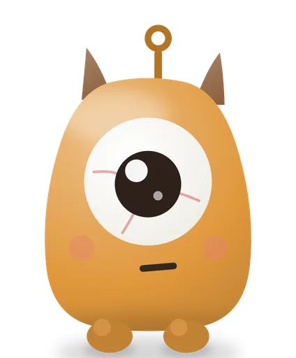

A visual ADHD timer that runs on your own focus length
Classic pomodoro gives you 25 minutes of work and a 5-minute break. With ADHD your focus may drift at minute 10, or you lock in and blow past 25 without noticing. Opora measures how long your attention holds and builds the rounds around that number.
How the Opora timer works
- Calibration. During a test round you tap each time your mind drifts. After three taps Opora averages them and offers that length as your work interval, anywhere from 5 to 90 minutes.
- A 5-minute first round. On a bad day you start with 5 minutes, short enough to begin.
- Breaks. A 5-minute break follows each work round, and a 30-minute break follows the fourth. You can change all three lengths.
- Your tap at each boundary. The timer waits for you before the break and before the next round. Turn on auto-start in settings if you prefer it.
- Time you can see. A ring in the app shows the time left in the round, and a countdown stays on the Lock Screen and in the Dynamic Island.
- Idea paper. When a thought barges in mid-round, you jot it down with one tap and sort it on the break.
- Early stops count. If you stop a work round after 5 minutes or more, Opora counts it as done.
Pomodoro and Opora, side by side
- Work round: pomodoro uses 25 minutes. Opora uses your calibrated length, whether that comes out at 12 minutes or 40.
- Short break: 5 minutes in both.
- Long break: pomodoro takes 15 to 30 minutes after four rounds. Opora takes 30 minutes after four, and you can change it.
- Missed rounds: a paper pomodoro sheet shows the gaps. In Opora each finished round plants something in your grove, and a missed day takes nothing away.
Start the timer from a task
You pick a task and start the timer from it, so your list and your focus timer live in one app. Tasks go into four animals: buffalo for urgent and important (three at most), elephant for big tasks you split, rabbit for quick ones and panda for things that can wait. In the evening you can plant a seed: one task and a first step under two minutes. In the morning the timer opens with that task loaded.
When starting itself is the problem, the page on ADHD task paralysis lists small ways to get moving.

The timer is in the free part
- The timer, calibration, tasks and widgets cost nothing.
- Opora needs no account and shows no ads.
- Your tasks and sessions stay on your iPhone.
For iPhone with iOS 17 or later. Opora Plus is one purchase or a monthly subscription.
Questions
- Does Opora run on iPad or Android?
- Opora runs on iPhone with iOS 17 or later. It has no Android version.
- Do I need a diagnosis to use it?
- No. If you want a first look at your own symptoms, the adult ADHD self-check asks the 18 questions of the WHO scale and scores them in your browser.
- Does a timer treat ADHD?
- No. Opora helps you start and keep going on a task. Diagnosis and treatment belong to a specialist.